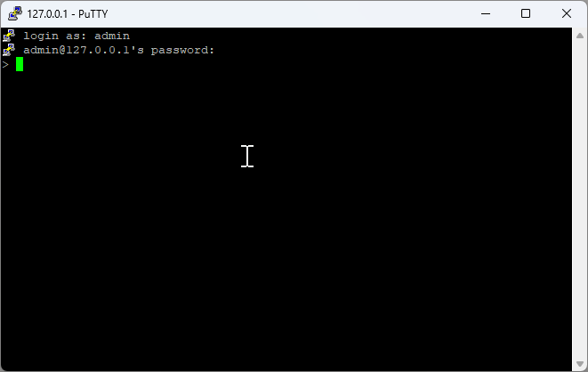

Remote Access¶
SSH Protocol Overview¶
SSH (Secure Shell) provides secure remote access to Port systems for administration and monitoring.
SSH Client Setup¶
PuTTY Installation¶
PuTTY is a free, open-source terminal emulator supporting SSH, Telnet, and other network protocols.
Download PuTTY
SSH Connection Process¶
1. Connection Configuration¶

Connection Details:
- Host: 127.0.0.1
- Port: 22
- Protocol: SSH
Default Credentials
- Username:
admin - Password:
admin
2. Authentication¶

Enter your credentials when prompted to establish the secure connection.
3. Command Execution¶

Once connected, you can execute various Port commands remotely: - View system status - Access log files - Monitor project operations - Perform administrative tasks
Remote Command Examples¶
Basic System Commands¶
Data Access Commands¶
# Get data from server
get Equipment Status
get SECS Temperature
get MyProject.log
# Set data on server
set Equipment Status RUNNING
set SECS CommState ENABLED
set Process Temperature 150.5
Log Access Commands¶
# Access project logs
get sample.log
get MyProject.log
# Access package logs
get SECS.log
get GEM.log
# Access system events
get SECS.event
get GEM.event
Administrative Commands¶
# User management
set password admin oldpass newpass123
set grant operator 2
# System notifications
set notify "Process completed successfully"
# Package operations
set init SECS
set init GEM
SSH Security Best Practices¶
Connection Security¶
- Change Default Credentials: Always change default username/password
- Use Strong Passwords: Implement complex password policies
- Enable Key-based Authentication: Use SSH keys instead of passwords when possible
- Limit Access: Restrict SSH access to authorized users only
Network Security¶
- Firewall Configuration: Configure firewall rules for SSH access
- Port Configuration: Consider changing default SSH port (22)
- IP Whitelisting: Restrict access to specific IP addresses
- VPN Integration: Use VPN for additional security layer
Session Management¶
- Session Timeout: Configure automatic session timeout
- Connection Monitoring: Monitor active SSH connections
- Audit Logging: Enable comprehensive SSH audit logging
- Failed Login Protection: Implement failed login attempt protection
Troubleshooting SSH Connections¶
Common Connection Issues¶
Connection Refused¶
Authentication Failures¶
Network Connectivity¶
Error Resolution¶
| Error | Cause | Solution |
|---|---|---|
| Connection timeout | Network/firewall issue | Check network connectivity and firewall rules |
| Authentication failed | Wrong credentials | Verify username/password |
| Permission denied | User access restrictions | Check user permissions and access rights |
| Host key verification failed | SSH key mismatch | Update or remove old host keys |
Advanced SSH Features¶
SSH Tunneling¶
Create secure tunnels for accessing internal services:
# Local port forwarding
ssh -L 8080:localhost:5001 admin@127.0.0.1
# Remote port forwarding
ssh -R 9090:localhost:5001 admin@127.0.0.1
SSH File Transfer¶
Transfer files securely using SSH protocols:
# Using SCP (Secure Copy)
scp file.txt admin@127.0.0.1:/remote/path/
# Using SFTP (SSH File Transfer Protocol)
sftp admin@127.0.0.1
SSH Key Management¶
Generate and manage SSH keys for enhanced security:
# Generate SSH key pair
ssh-keygen -t rsa -b 4096
# Copy public key to server
ssh-copy-id admin@127.0.0.1
Integration with Port Applications¶
Remote Monitoring¶
Monitor Port applications remotely through SSH:
# Monitor system resources
get system resources
# Check application health
get health status
# View real-time logs
get logs --follow
Remote Configuration¶
Configure Port applications remotely:
# Update configuration
set config parameter value
# Restart services
set service restart
# Deploy updates
set deploy package_name
Remote Debugging¶
Debug Port applications remotely: